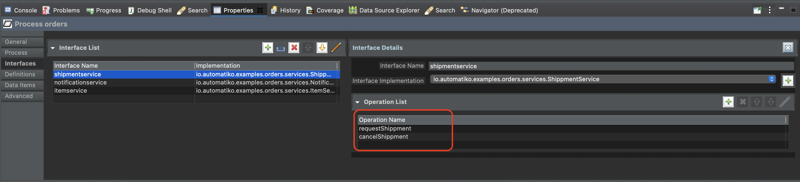
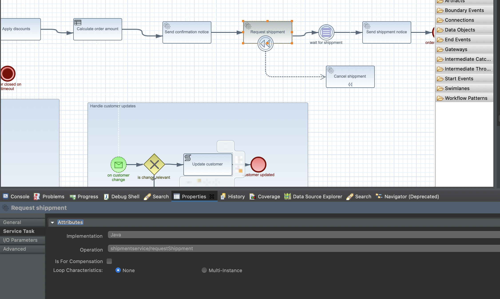
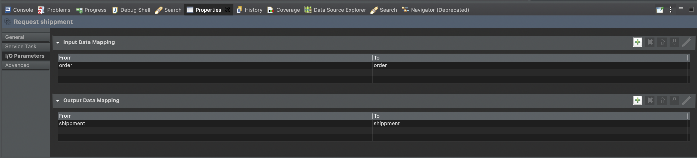
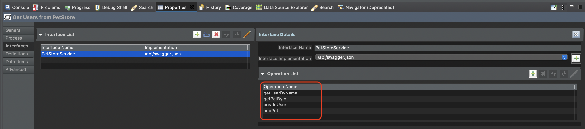
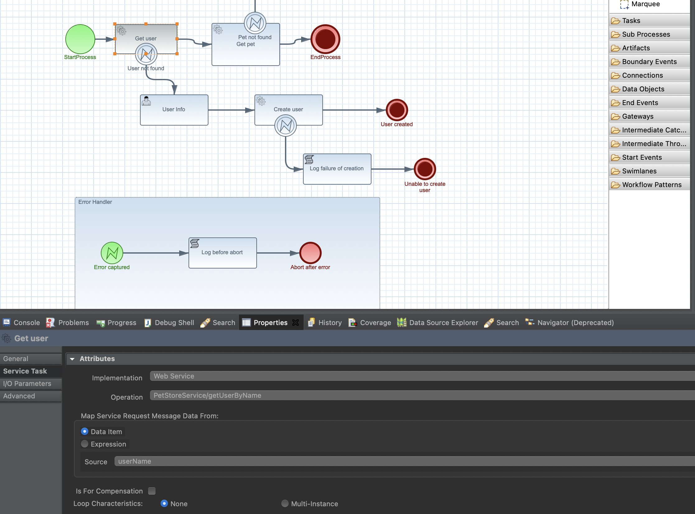
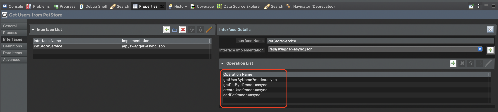

Service invocation
One of the most common tasks in workflows is service task. This task is responsible for invoking an operation. There might be various types of operations such as
-
java method in one of the service classes of the project itself
-
ReST call to remote service
These operations are configured as a service tasks and invoked by the workflow engine.
Service tasks can also be equipped with error handling by the use of boundary events, see details here.
Invoking local service
Services can be implemented as part of the project itself. That means they reside in the same code base and usually are represented as CDI bean that enables additional dependent services and/or classes to be automatically injected.
As an example, one can fetch information from the data base and thus the service responsible for connecting to a data base will need to get hold of data source to be able to obtain connections.
@ApplicationScoped
public class PersonDataLoader {
@Inject
DataSource dataSource;
public List<Person> load() {
// implementation of the loading logic
}
}On the workflow side, such service is declared as interface where there are following information required
-
Interface name - that will be used to reference it from service tasks
-
Interface implementation - fully classified class name
-
Operations - list of operation names that match the method names of the service class
These are declared on the workflow level, via properties panel.

Once interfaces and their operations are defined, service tasks can reference them.

Lastly service operations can require inputs and might produce outputs. These
can be mapped to and from workflow instance variables via IO parameters of
the service task

Where
-
Input Data Mapping corresponds to operation arguments
-
Output Data Mapping corresponds to returned value from the operation
This is all that it takes to invoke a local service operation from within workflow.
Asynchronous service invocation
Sometimes there might be a service call that might take more time and thus shall be invoked asynchronously. Or it simply blocks on IO and thus can be inefficient to block threads and thus become a bottleneck in the service as a whole.
To address that, service implementation can be made reactive and thus follow the continuation pattern. In other words this will release the thread whenever it is about to block and schedule IO operation to continue as soon as it produces results.
The implementation is based on SmallRye Mutiny that implements efficient layer for reactive programming.
@ApplicationScoped
public class PersonDataLoader {
@Inject
DataSource dataSource;
public Uni<List<Person>> load() {
// implementation of the loading logic
}
}As can be noted, the only thing here is the return type that returns Uni (a reactive type of Mutiny)
and based on that information, workflow engine will apply the continuation pattern freeing the thread and the workflow instance
from being blocked.
There is no need to make any modifications on the workflow definition to make use of asynchronous invocation.
Invoking REST service
As opposed to local services, workflows in many cases need to interact with outside world. Especially common when implementing orchestration based service where coordination of various external systems is a key.
To make this possible, service tasks allow to invoke ReST services based on OpenAPI service description.
Main part required for this use case is the OpenAPI service description that is either locally
(inside the project’s resource folder src/main/resources) or remotely (accessible over the http(s) protocol).
On the workflow side, such service is declared as interface where there are following information required
-
Interface name - that will be used to reference it from service tasks
-
Interface implementation - location of the OpenAPI service description (
/api/swagger-petstore.jsonorhttps://petstore.swagger.io/v2/swagger.json) -
Operations - list of operations that match the
operationIdfrom OpenAPI service description
These are declared on the workflow level, via properties panel.

Once interfaces and their operations are defined, service tasks can reference them.

Note that ReST service when being referenced needs to select the webservice as implementation
|
Lastly service operations can require inputs and might produce outputs. These
can be mapped to and from workflow instance variables via IO parameters of
the service task
Where
-
Input Data Mapping corresponds to operation arguments
-
Output Data Mapping corresponds to returned value from the operation
This is all that it takes to invoke a ReST service operation from within workflow.
Asynchronous service invocation
Similar to local service calls, ReST service invocation can also be made asynchronous. Here it is even more important as going to remote ReST service over the network is certainly a blocking operation with no clear information how fast or how slow it can be.
To make the ReST operation asynchronous, workflow definition must declare that on the interface operation level
as additional parameter on top of the operation name e.g. createUser?mode=async

And this is the only required change to make the service run in asynchronous manner.
Fault tolerance
One important aspect of service invocation is to be able to deal with failures. Failures are to be expected so being able to deal with them in various ways is important, even more important when working with workflows that allow to easily take advantage of various features of fault tolerance.
One obvious way of dealing with failures is error handling that is already covered here. Error handling allows us to cover a retry or taking another path of the workflow in case of a failure. But error handling is not the only way to become more fault tolerant on service invocation. Another approaches are
-
circuit breakers
-
timeouts
Circuit breakers
Circuit breakers allow to guard the service from being constantly invoked in case it is already failing. This is mainly to reduce the stress put on the service as it might be as simple as service is overloaded. Circuit breaker can be opened based on defined threshold to avoid service from being invoked at all if it is already known to be the failing. That in turn will make the worklfow instance to be in error state but reduce calls to the actual service.
In addition to that, workflows actually track these errors and observes state of the circuit breakers to be able to easily resume work on failed instances as soon as the circuit is closed again, meaning that service is now working correctly and can process incoming requests.
| When circuit is closed (service is now operational) all failing instance of that type will be automatically resumed. Resume is done in sequence and reacts in case of repeated circuit being opened and directly stop resume procedure. |
This capability is defined on each service task of the workflow definition. The reason why it is done on the service task and not the interface operation itself is to have better control over how service is invoked from within the workflow.
Following is a list of custom attributes that configure circuit breaker on service task
| Property name | Description | Default value |
|---|---|---|
requestThreshold |
The number of consecutive requests in a rolling window |
20 |
failureRatio |
The ratio of failures within the rolling window that will trip the circuit to open |
0.5 |
delay |
The delay after which an open circuit will transitions to half-open state (when the service will be probed) |
5000 |
| Circuit breaker and error handling - all errors defined for given service task (boundary event and event subprocesses) will by pass circuit breaker as they are considered with higher priority as they were defined in the workflow. |
Timeout
Timeout allows to guard the workflow instance from waiting too long on service call to return. If set then the service
invocation will be interrupted and exception will be thrown with error code set to 408. Then error handling can be applied on
it in the same way as for any other errors.
| Property name | Description | Default value |
|---|---|---|
timeout |
Timeout (in milliseconds) before service invocation is interrupted and exception is thrown (error code 408) |
-1 (meaning won\t be used) |
Use it
First of all, a dependency to automatiko-fault-tolerance-addon needs to be added to the project.
<dependency>
<groupId>io.automatiko.addons</groupId>
<artifactId>automatiko-fault-tolerance-addon</artifactId>
</dependency>Then each service task can have timeout and circuit breaker custom attributes set based on the needs. Lastly, in case fault tolerance features are not needed on given task following custom attribute can be specified to disable it.
| Property name | Description | Default value |
|---|---|---|
faultToleranceDisabled |
Disables fault tolerance on given service task |
false |